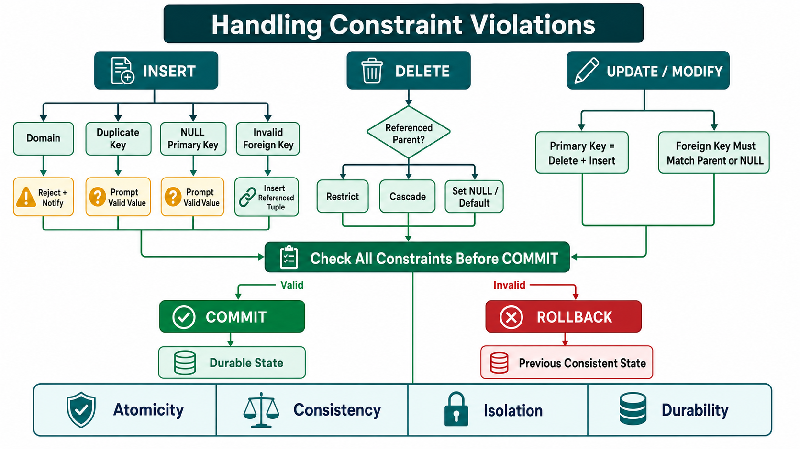

1. Database Operations
A DBMS must preserve integrity and consistency while data changes. Every operation is checked against key, entity, domain and referential constraints.
- INSERT: adds a new tuple.
- DELETE: removes a tuple.
- UPDATE / MODIFY: changes one or more attribute values in existing tuples.
The goal is always to leave the database in a valid state.

2. INSERT Violations
| Constraint | Violation |
|---|---|
| Domain | Wrong data type, format or range. |
| Key | New primary-key value duplicates an existing value. |
| Entity integrity | Primary key is NULL. |
| Referential integrity | Foreign key references a non-existent parent. |
Inserting Alicia Zelaya with SSN 999887777, salary 28000 and Dno 4 fails if SSN 999887777 already exists:
<'Alicia','J','Zelaya','999887777','1960-04-05', '6357 Windy Lane, Katy, TX', F, 28000, '987654321', 4>
How INSERT violations are handled
- Reject and notify: the normal DBMS response.
- Prompt valid data: request a non-NULL primary key or valid domain value.
- Insert referenced tuple first: if Dno has no department, create a valid DEPARTMENT row before the EMPLOYEE row.
3. DELETE Violations
Deleting a parent tuple may leave orphaned child records. Deleting EMPLOYEE Ssn 333445555 can affect DEPARTMENT, WORKS_ON and DEPENDENT rows that reference it.
RESTRICT
Reject deletion when related records exist.
CASCADE
Automatically delete all dependent tuples.
SET NULL / DEFAULT
Replace child foreign keys with NULL or a preset default.
Example: deleting employee 123456789 may set matching WORKS_ON.Essn values to NULL when the schema permits it.
4. UPDATE Violations
Updating a primary key is treated like deleting the old tuple and inserting a new one. It may break uniqueness or existing foreign-key references.
- Primary-key update: changing Ssn 123456789 to 987654321 fails if 987654321 already exists.
- Foreign-key update: the new value must match a parent key or be permitted NULL.
UPDATE EMPLOYEE SET Dno = 10 WHERE Ssn = '999887777';
This fails if DEPARTMENT.Dnumber 10 does not exist.
5. Transactions and ACID
A transaction is an atomic sequence of read/update operations treated as one unit.
| Property | Meaning |
|---|---|
| Atomicity | All operations complete or none are applied. |
| Consistency | The database moves between valid states. |
| Isolation | Concurrent transactions do not interfere. |
| Durability | Committed changes remain permanent. |
Bank transfer: debit and credit must both complete or both revert.
Before COMMIT: DBMS verifies all constraints. If any step fails, the whole transaction ROLLBACKs to its earlier consistent state.
Order example: checking stock, reducing inventory and recording the sale form one transaction. If the inventory update violates a constraint, every step reverts.
6. Combining Strategies
- CASCADE for deep deletion: deleting a department can remove associated employees and projects.
- SET NULL for non-critical links: preserve child rows but clear their removed reference.
- RESTRICT for critical data: prevent deletion when essential references, such as financial records, exist.
7. IBPS SO Quick Revision
- INSERT may violate domain, key, entity or referential integrity.
- DELETE mainly threatens referential integrity.
- Primary-key UPDATE behaves like DELETE + INSERT.
- Foreign-key UPDATE must match a parent key or permitted NULL.
- Delete actions: RESTRICT, CASCADE, SET NULL or SET DEFAULT.
- Constraint failure normally causes rejection and notification.
- Transaction = atomic unit of database work.
- Valid transaction → COMMIT; violation → ROLLBACK.
- ACID = Atomicity, Consistency, Isolation, Durability.
Most likely questions: Duplicate PK on insert—key violation. Dno 10 without department—referential violation. Delete dependent rows—CASCADE. Undo entire failed transaction—ROLLBACK.